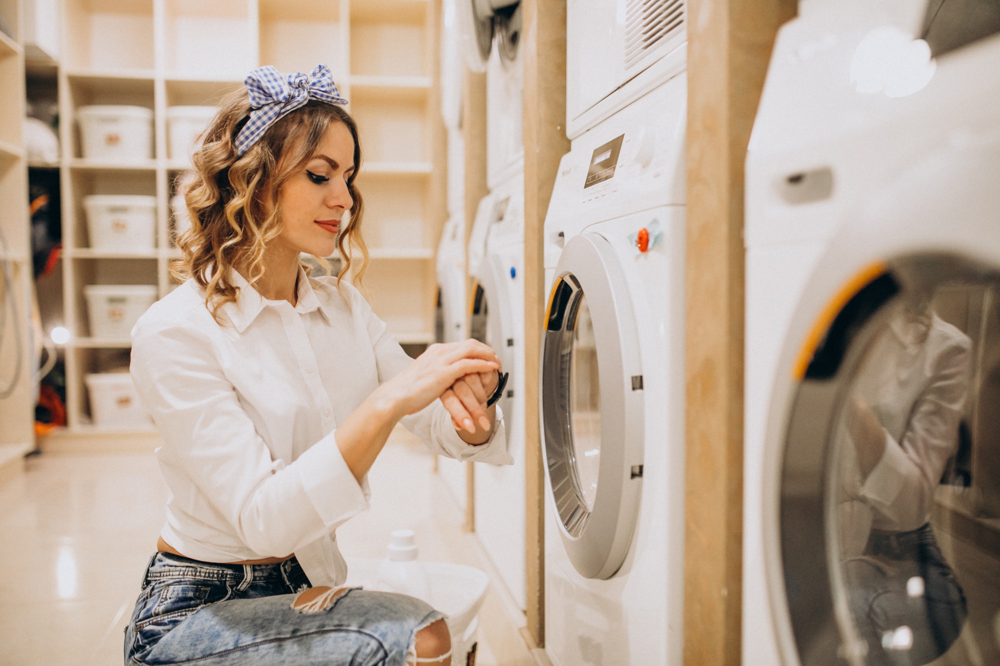

Какие бывают режимы в посудомоечных машинах
Всё зависит от модели: иногда в посудомойке бывает всего два-три режима, а в продвинутых моделях их может быть больше десяти.
| Режим | Зачем нужен | Особенности |
| Интенсивный (Heavy) | Для сильно загрязненной посуды вроде кастрюль и сковородок с пригоревшей едой | Температура до 70°C, длится 150–205 минут |
| Экономичный (Eco) | Для повседневной посуды, не слишком запачканной | Экономит воду и энергию, длится 180–210 минут при 50°C |
| Автоматический (Auto) | Если не хочется думать о том, какой режим выбрать | Машина анализирует загрязнение сенсорами, мойка длится 105–180 минут при 45–65°C |
| Быстрый (Quick/Express) | Для слабо загрязненной, практически чистой посуды | В Gorenje GV643E90 длится всего час при 65°C |
| Гигиена (Hygiene/Hygienic) | Для полного уничтожения бактерий, подходит для детской посуды | Мойка при высокой температуре от 70°C |
| Деликатный (Glass/Delicate) | Для стекла, хрусталя и фарфора | Низкая температура и бережное мытье |
| Половина загрузки (Half Load) | Если посуды мало и хочется сэкономить электроэнергию | Цикл мойки обычно быстрее на 20–30% |
| Замачивание (Soak/Pre-rinse) | Чтобы размягчить стойкие пятна, засохшую грязь или остатки пищи | Короткий цикл ополаскивания холодной водой |
| Ночной (Silent/Night) | Если нужно поставить мойку на ночь и не хочется просыпаться от шума | Тихий и длительный, до 5,5 часов. Такой есть в машине Gorenje GV663B62. И не стоит переживать, что машина работает практически без присмотра — функция AquaStop предотвращает любую протечку воды |
Машина использует три компонента: моющее средство, ополаскиватель и соль. Каждый из них нужно поместить в отдельный блок, но можно использовать и специальные капсулы, где все компоненты совмещены.
В некоторых моделях предусмотрены и дополнительные функции вроде самоочистки, автооткрывания дверцы или сокращения времени цикла, как в машине Gorenje GV663B62. Все они упрощают жизнь. Какие функции доступны в конкретной посудомоечной машине, можно узнать из инструкции.

Что будет, если включить неподходящий режим
Если неправильно выбрать режим мытья посуды, могут быть неприятные последствия. В лучшем случае посуда просто не отмоется и нужно будет просто поставить мойку ещё раз. Например, если на посуде стойкие загрязнения, а использовался быстрый режим.
Бывают ситуации хуже: посуда может испортиться. Если мыть фарфор или хрустальные бокалы на интенсивной программе при высоких температурах, могут пойти трещины. Для такой посуды подойдет деликатная программа.
Также не стоит постоянно использовать низкотемпературные программы. Это может привести к возникновению жировых отложений внутри машины и появлению неприятного запаха. Регулярно включайте горячие режимы и запускайте программу самоочистки.
Какую посуду нельзя загружать в посудомойку
Вне зависимости от количества режимов на вашей машинке, в ней нельзя мыть некоторые виды посуды из-за риска деформации, коррозии или потери свойств под воздействием горячей воды, пара и моющих средств. Например, посудомойка не подойдет для такой посуды:
- деревянные доски, ложки, лопатки набухают, трескаются и меняют форму;
- алюминий без покрытия темнеет, или покрывается пятнами, некоторые алюминиевые сплавы после мытья могут начать пачкаться;
- антипригарное покрытие на посуде теряет свои свойства;
- роспись и позолота смывается или разрушается.
Также ножи могут затупиться или поцарапать другую посуду, если неплотно зафиксированы. Чтобы такого не происходило, стоит выбирать машинку со специальным держателем для ножей, где они будут надежно зафиксированы, например как в Gorenje GV573C11.

Для большинства семей подходят недорогие компактные посудомоечные машины, но если вы часто принимаете гостей или у вас много разнообразной посуды, стоит присмотреться к продвинутым моделям вроде Gorenje GV663B62.


Её главное отличие — вместимость. Можно загрузить до 16 комплектов посуды, что идеально для больших семей или частых вечеринок. Есть возможность разместить как мелкую посуду, так и наоборот очень крупную. Инверторный мотор обеспечивает тихую и эффективную работу, а сушка TotalDry, сочетающая использование остаточного тепла и автоматическое открывание двери, гарантирует идеально сухую посуду.

Профилактика стиральных машин
Стиральная машина — одна из самых нагруженных бытовых приборов в доме. При правильной эксплуатации она служит 10-15 лет, но ошибки...

Обзор стиральной машины
Выбор стиральной машины в 2026 году превратился в сложный квест: сотни моделей, десятки функций и маркетинговые уловки...
Листая дальше, вы перейдёте на ozon.ru